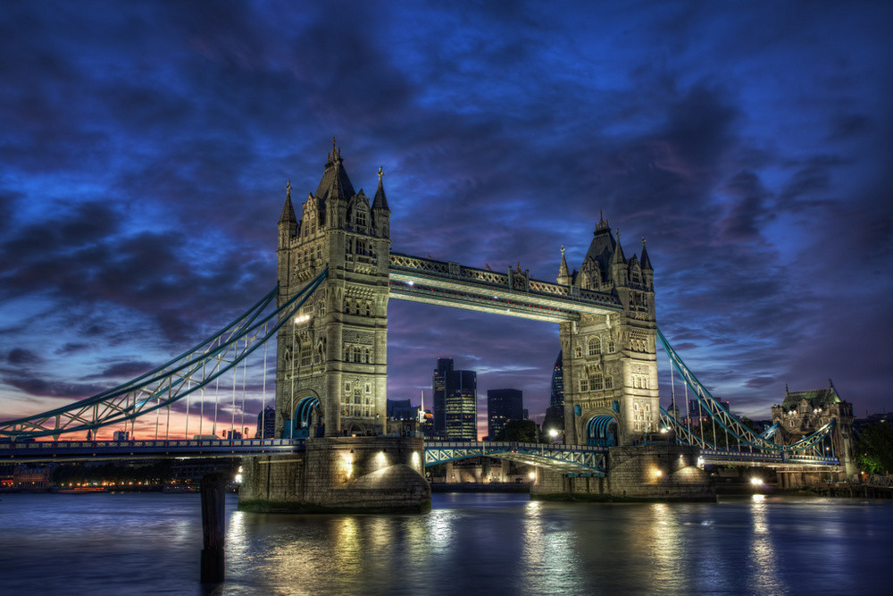
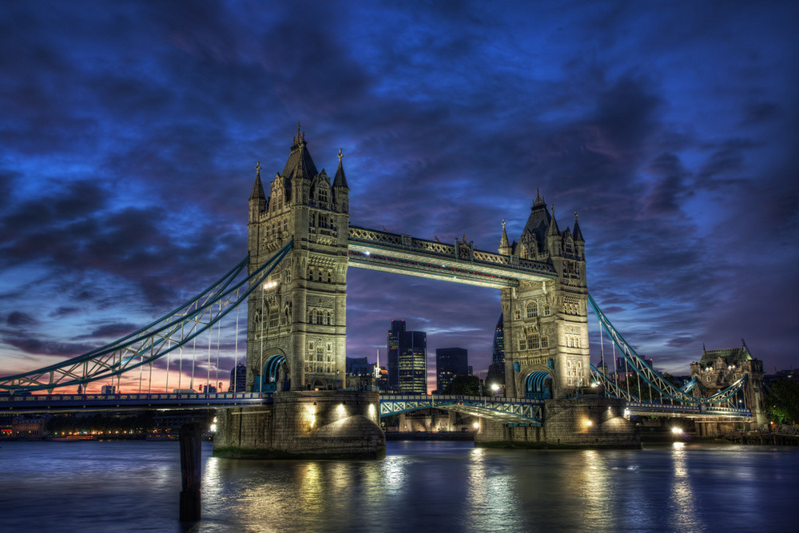

Hadr aneb krátký návod na omalovánky
Komu je pojem HDR fotografie neznámý, pak vězte, že je to taková ta hodně barevná fotografie, která vypadá až neskutečně a přitom úžasně. A ona opravdu většinou neskutečná je. Pro lepší představu vám raději hned podstrčím obrázek.

Někomu se to líbí, někomu ne. Skrze prsty na to koukají zastánci filozofie neupravování fotek v počítači. Každopádně ať si kdo chce, co chce, říká, mnohým fotkám tato úprava pomůže. A tak raději, něž přejdeme k samotnému návodu, jak fotografii upravit, zdůrazníme pár bodů, kterými je třeba se držet, aby vás ostatní nevypískali.
Zásady HDR fotografie
- Ze špatné fotky dobrou neuděláte. To platí vždycky. Obráceně už zdaleka ne.
- Nekažte fotky. První pravidlo naopak neplatí. Z dobrých fotek lze snadno pomocí HDR udělat fotky špatné a mizerné. Nervěte tento efekt všude!
- Netvořte omalovánky. Čeho je moc, toho je příliš.
A abych to jen utvrdil, ukázka vyloženě špatně provedené úpravy, odstrašující příklad.

Když pominu to, že fotka sama o sobě žádný zázrak není (a tím nesplňuje první bod), třetí bod - omalovánky - je evidentní. Poskytuje také ukázku častých začátečnických chyb, třeba světlá obloha v okolí stromu v pravém horním rohu.
Abych byl přesný, celou dobu trochu mystifikuji. Pojem HDR je přísně vzato postup, kterým se jakoby zvětší dynamický rozsah fotografie na vašem monitoru. Jinak řečeno, uvidíte i přepálená a podexponovaná místa dobře. Kouzlení s barvičkami se nazývá tone-mapping. To zmiňuji, jen abych učinil povinnosti zadost. Celý tento postup se zabývá kombinací obojího a nadále tomu budu říkat jednoduše HDR.
Teď už se ale pusťme do samotného pracovního postupu…
Co budeme potřebovat
Fotoaparát
Překvapivé, že? Ideální je na to zrcadlovka, případně kterýkoliv kompakt, který umí fotit do RAWu. Pokud to ten váš neumí, neznamená to, že je všechno ztracené. Je možné vytvořit více snímků s různou expozicí. Ale to je práce navíc a zabývat se tu tím nebudu. Jiné speciální nároky nejsou.
Luminance HDR (qtpfsgui)
http://qtpfsgui.sourceforge.net/
Tento program za vás oddře většinu práce - stará se o samotný efekt. Mám ho rád proto, že je k dispozici i pro Linux (pro Windows samozřejmě taky, dokonce i pro Mac). Nabízí celou řadu filtrů, některé použitelnější některé méně. Samozřejmě existují i alternativy.
GIMP
Známý program pro úpravu fotografií, nám poslouží na výsledné doladění. Někdo dává přednost Photoshopu, budiž, postup je obdobný. Nám chudým studentíkům postačí výborně.
A jdeme na to
1. Výběr fotky
Když už máme vše připraveno, jediné, co nám schází, je nějaká fotka. Skvělý HDR fotograf, Trey Ratcliff, říká, že se musíte naučit koukat a umět si představit, jak fotografie bude vypadat ve výsledku.
Naučit se to není samozřejmě jen tak a chce to zkoušet a zkoušet. Proto nebude vadit, když ze začátku vybereme klidně i slabší fotografii a zkusíme, co to s tím udělá. Jen musíme počítat s tím, že neuděláme díru do světa a že není potřeba se s prvním pokusem chlubit.
Na ukázku jsem si vytáhl z alba tuto fotografii z nedávné návštěvy Liberce.

Pro ukázku by měla být postačující - máme tu jak velmi světlá, tak velmi tmavá místa, celkem pestrou scénu a Ještěd v dálce.
2. Luminance HDR
Máme-li fotku, můžeme se vrhnout do prvního z programů - Luminance HDR. Příjemné na něm je už jen to, že dokáže načíst i RAW soubory. Stačí kliknout na Open HDR image a danou fotografii najít.
Mám program v takové napůl přeložené verzi. Nevím, jak jste na tom vy. Doufám, že všechny popisky najdete bez problémů.
Po úspěšném načtení fotografie bychom měli mít před sebou okno podobné tomuto:

Co jaké tlačítko dělá si můžete vyzkoušet sami. Z těch nejdůležitějších je to nabídka Operator, která dává na výběr z možných filtrů. Osobně nepoužívám téměř nic jiného, než Mantiuk ‘06.
V bloku o něco níže jsou pak nastavení daného filtru. Pokud zůstanu u Mantiuka, mám možnost tří hejblátek - první z nich je "Koeficient kontrastu". Čím bude toto číslo menší, tím více znát bude efekt. Na vašem vkusu a cítění je už najít co nejvhodnější číslo.
Druhou možností je "Koeficient saturace". Díky tomu dosáhnete oněch úžasně, až kýčovitě, zabarvených fotografií. Čím je číslo vyšší, tím živější jsou barvy. Na druhou stranu pak budou upadat do šedi.
"Detail factor" vám jaksi zvýrazní detaily. Vyšší čísla působí na fotografii dost zvláštně.
K vytvoření upraveného snímku slouží dole vlevo tlačítko Tonemap. Ve stejném bloku je ještě možnost výsledné velikosti (Result Size). Pro zkoušení, jak to bude vypadat, doporučuji rozlišení okolo 1024x678px. Až budete spokojení, vytvořte obrázek v co největším rozlišení a nezapomeňte ho poté uložit.
Já jsem si nastavil hodnoty popořadě na 0,150 - 1,700 - 1,0. Výsledkem je tento obrázek.
To už vypadá celkem dobře, ale…
3. GIMP
…stále to není ono. Okolo budovy a stromů nám to vytvořilo nehezky světlou oblohu, což působí zvláštně. Chtělo by to vůbec ještě některé detaily doladit - doostřit, upravit kompozici.
Na řadu přichází GIMP nebo jiný program na úpravy fotografií. Základem je vzít jak původní fotku, tak novou fotku v HDR a pracovat s nimi, jako s dvěma vrstvami.

Na pozadí mám původní obrázek, v hořejší vrstvě upravený. K němu jsem zároveň přidal masku. Místa, která se mi zdají příliš světlá mohu jednoduše pomocí masky částečně zprůhlednit. Pro ty, co s maskami pracují poprvé existuje spousta materiálu.
Vhodné je pomocí naduplikované spodní vrstvy ještě ztmavit oblohu - pomocí opět nějaké masky a lineárního přechodu. Po úpravách můžeme docílit takovéhoto výsledku:

Zbývá jen doostřit a je hotovo, můžeme slavit a plánovat skvělé zítřky:
A to je vše.
Skutečně. Ještě dodám, že toto je pouze návod. Nezaručí vám, že vaše fotky se hned začnou vystavovat a prodávat. Nezačnou. Ale můžete si prohlédnout pár fotografií, ke kterým se můžete časem přiblížit.
 
